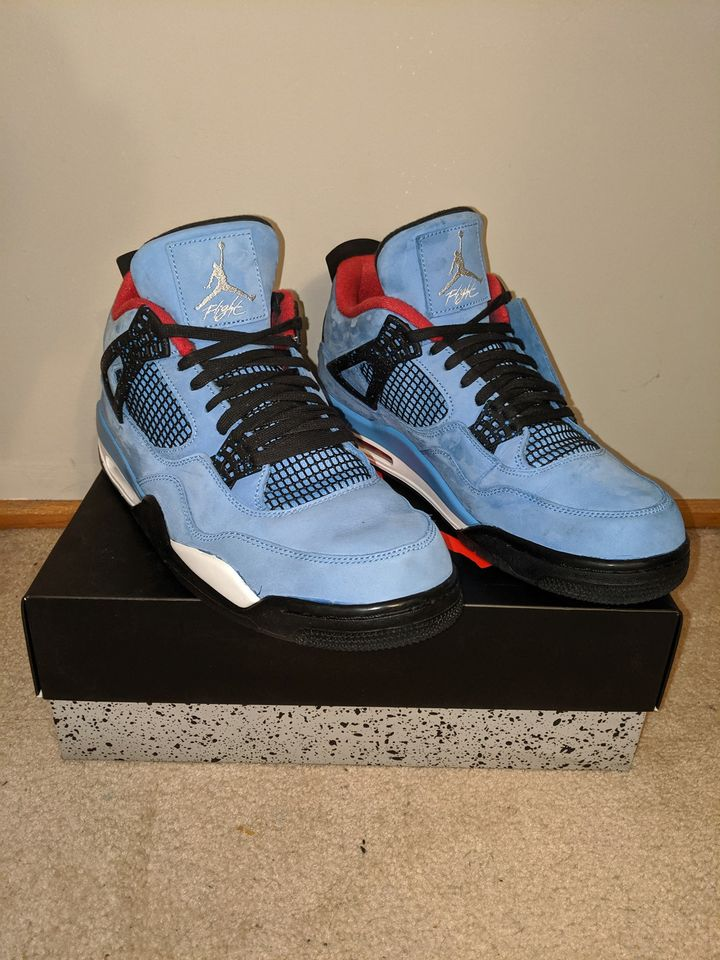

Dillon Foenander
Welcome to my Profile!
Australian NATIONALITY
s3484430 STUDENT NUMBER
English Spoken Languages
HTML, CSS, JS, PHP, SQL Programming languages
Technical, Writing, Verbal, Office SKILLS
Jump To:
Ideal Job
Personal Profile
My Project Idea
Some information about me and my Interest in Information Technology.
My name is Dillon Foenander, I am currently undertaking an undergraduate course at RMIT University with my major being Business Information Systems (BP308) , and Specifically Introduction to Information Technology (COSC1078) as an Elective in my Final Year and have completed Many IT and Business Subjects Alike.
My Interest in Information Technology Started at a young age, when I started playing video and computer games. From Pokémon Gold on my first handheld device, Gameboy colour to Atlantis on my first Video Gaming Console, PlayStation one, It amazed me how worlds could be built into a device for you to explore endlessly, this of course led to a passion in all Things Technology; in General, could do, especially when code was involved.
Turning words into actual computer processes such as the things that happened within certain applications such as paint and full three-dimensional worlds in games like croc and Spyro (3D action adventure games) piqued my interest Which led me to take IT specific courses in Both High School and University; Information Technology Certificate ¾ as well as Interactive Digital Media Certificate ¾.
Within a workplace and in my everyday life; I have worked in the IT Sector as a Website Administrator as well as within the retail Industry selling IT Specific Products and Services.
I hope to use this later in life to pursue a career as a Business Analyst or any other job associated such, my learning and participation in work activities within the Sector I Hope to and Has thus far helped me acquire skills and knowledge Which are both empowering and Interesting at the same time.
Facts:
- I built my own computer from scratch, parts were bought from a computer store online, and i spent roughly a day putting it together. Below are some Pictures of it
- The Houston Rockets are going to win the Playoffs in the Bubble s19/20, Go Rockets! - My Favourite Team if that wasn't Obvious
- Finally my most passionate, and diverse from my IT background is my collection of High-End Sneakers, i own Yeezys, Jordans and other Collectible sneakers Below are a couple of My Sneakers that i am Proud to Own 

 taken from https://stats.nba.com/media/img/teams/logos/season/2018-19/HOU_logo.svg
taken from https://stats.nba.com/media/img/teams/logos/season/2018-19/HOU_logo.svg
My Ideal job
The position I have chosen is that of a Full Stack Developer at JB Hi-Fi. A Full stack Developer must be a person who is both capable at Front end Web development, What the end user interacts with; This includes Coding Languages such as HTML, CSS and JavaScript. As well as proficient in Back end Web Development which is where the server-side coding takes place these include languages such as PHP, Python and C#. What makes this position appealing to me is the fact that I am proficient in Most if not all of the Programming Languages required to Successfully carry out the job , and the ones I am not, I am extremely enthusiastic to learn more on and develop my skills. There are also many positives for working for brand with such an avant-garde image other than exclusive discounts there is Job Security, A friendly team and Rewarding experiences. What is needed for me to Successfully acquire this role includes 5 or more years of experience in the Software development sector most likely dealing with Front and back end Web Development Codes and Tools. Luckily, I already have 5 years of experience with web development and have even worked previously as a website administrator for a small discount supermarket. Working within the retail industry and understanding how it works is another Piece of experience that has taught me to work well and learn around others, including customers. A bachelor’s degree in an Information Technology or Computer science may not be mandatory for the exact role I am applying for but will help me develop my skills as it is currently doing. Currently my Experience with web development goes as far as University work for Assignment, projects undertaken in my own time and Working for some time as a Web administrator Sending out Newsletters, maintaining a Bulletin and Catalogue on a website through Tools such as Dreamweaver and other Needed Languages to Build and Maintain a website with a CMS (Customer Management System) This taught me a great deal of skills and procedures for Web Development such as working within the Software Development Life Cycle, this contains six stages: analysis, design, development & testing, implementation, documentation, and evaluation. Which in turn makes me a perfect Candidate for this role in the Future.
My Plan to Make this Happen
My Plan Includes 3 Steps, Create a list of my Strengths and Weaknesses as I have defined earlier this is to highlight my positive attributes and work out contingencies for any weaknesses which I need to improve on, Proactively Seek out Workplaces that align with my own Goals by reading through what it is like to work at the company I am seeking out and making sure it aligns with my Current Life and Work Balance, Make sure I am Prepared and Present evidence so as to make it obvious I am ready to answer any questions or show examples of any previous work through a portfolio which I am currently gaining experience in from doing this and other HTML projects I have undertaken. Taken from: https://careers.jbhifi.com.au/cw/en/job/493242/
Taken from: https://careers.jbhifi.com.au/cw/en/job/493242/
Personal profile
The following are an explanation of results for 3 Personality Tests I Undertook
What do the results of these tests mean to me?
The Results of the three Tests I did, gave me a broader understanding of my Personality and how I Learn and take in information. This is useful to me in making decisions about my work life and how I can organize myself and my time efficiently and effectively. I have been categorized by the Myers Briggs test as an Architect Personality type, this to me is fairly accurate as I am most of the time Introverted, and constantly am thinking of possible solutions to problems, This can help me choose jobs and groups more tailored to me. My learning style shows me that a visual learner may need certain aids to learn things, so reviewing info graphs and putting things into a visual context helps me understand problems/situations better. My enneagram further extends my curiosity into my personality type, Type six ‘the skeptic’ aligns with me being an ‘Architect’ Personality type.
How do i think these results may influence my behaviour in a team?
My results indicated that I am someone who tends to like to solve problems by themselves as a ‘lone wolf’ or in smaller groups with a succinct objective. That being said I believe in the IT work environment it is important to be able to work with others in a team, even as a web developer it is important to cross reference Goals and Objectives of the Entire business e.g. working with the Product Buyers of a Retail Company to align with the Products Displayed for the End-User on a Website. Hence, it will be somewhat difficult at times to work with a group, but problem solving and being a Team Leader to Reach a Common Objective is one of my Strengths which I can use to Bring a Team together and complete Goals.
How should I take this into account when forming a team?
Things I should consider when making a team is whether I will be working with people who will distract me from my Goal or the Groups Goals. I will most likely want to lead, the project as a whole if not my own area and have some control of the overall decisions made.
16 Personalities Online Myer-Bridges Test
https://www.16personalities.com/free-personality-test

Online Learning Test
http://www.educationplanner.org/students/self-assessments/learning-styles-quiz.shtml
Enneagram Test - Free Choice
https://www.truity.com/test/enneagram-personality-test

My Project Idea

OVERVIEW
My Project is an amazingly simple idea, have you ever been out and about and wanted to know what someone’s Sneakers they are wearing are called, where they got them… are they collectible? How much are they currently worth and can I get a pair for myself? But have been too tired, introverted or just can’t be bothered striking up a conversation with a stranger? What if there was a Simple Mobile Application, downloadable on the Google Play store and Apple App store, that was able to ping nearby phones through Bluetooth and wireless technologies and would update and Data on an the Application to show Data that an end user has entered about their sneaker? Well thanks to my New Project ‘Sneakergrab’, there soon will be!
MOITIVATION
Through research Undertaken on my own, I have found that there are Roughly 120,000+ Avid Sneaker Collectors in Australia Alone (Underground Society on Facebook has 119,000+ members alone as of 2020), although my market is somewhat niche. People in the Social Media Groups I have researched, which are dedicated to sharing images and content about personal Sneaker collections and Sneaker release dates, would use an Application like Sneakergrab. Sneakers are about ‘showing off’ and I am an avid Sneaker Collector, many times I have found myself walking around minding my own business, when all of a sudden, Somebody else wearing a pair of Sneakers Catches my eye, one that In my eyes and many ‘Sneakerheads’ could end their never-ending search for the ‘Perfect Sneaker’. Another Scenario includes the ability to showcase your sneakers like never possible before. There have always been ‘Sneaker-Portfolio’ Applications, although this is different, you cannot really advertise those Profiles the way you can with ‘Sneakergrab’. As it pings nearby Smartphones which also have Sneakergrab installed and tells Nearby users in the Area about your Awesome Expensive Sneakers!
DESCRIPTION OF FEATURES
My Product/Service is an Application designed to ‘grab’ nearby information about sneakers end users have entered about the sneaker’s they are currently wearing or have at home. The application Will be aimed towards Smartphones Users who can access the Google Play store as well as the Apple App Store, Once downloaded for free the User Has to Make a profile after a short welcome screen. The main Objective here is to create a portfolio of your Sneakers, so that other nearby users can access information on their app about your sneaker collection and the sneaker you currently have on. This will work by pinging nearby Apps using Bluetooth technology which has recently been made cross platform between different phone Operating Systems, a ping will be sent out every so often that will notify other users of the app that your shoe is nearby with a picture of the sneaker. A Notification start of each day can be utilised to tell you to input which sneaker you have on for the day (this can be ignored) Sneaker Validation is also a very important feature, as it negates people from using Fake/Copy Sneakers within their Profiles, to check if your sneaker is real and can be added to your profile, it will need to go through a validation process, Which will be through a combination of AI and a Backend Team. Personalise your profile to fit you, this profile is what other people will see, including some Information such as a username and Profile Picture and of course your Extensive Sneaker Collection. See who has viewed your sneakers, and how many views it has had. Adding friends will be possible through a social tab, to stay connected with fellow Sneakerheads. The last and most Compelling feature for Sneakergrab is the Sneakerdex, a directory of all the sneakers you have found out in public, a list will appear of all Sneakers seen in the wild with all relevant information such as who wore it, where you saw it and how many you have seen (to see how popular said sneaker is )
TOOLS AND TECHNOLOGIES
Technologies Needed Includes:
- - Smartphones, a variety to develop and test on
- - Computers, to develop app on, Macintosh To Develop iOS App on, it is also Plausible to use a Virtual Machine for a Mac to develop on Xcode.
- - A Server, either hosted or physical so all web services for the app and database are hosted.
- - Some sort of Security/Validation to Encrypt User Data on Server e.g Truecrypt
Tools Needed Include:
- - Xcode/SwiftUI, Integrated Developing Environment for iPhone/All Apple Platforms.
- - Android Studio, to develop App for Android.
- - Adobe Photoshop/Illustrator needed for Graphic Design, for all Graphics within the App.
- - Physical Security at Data Centre e.g Locks or Biometric Technology
SKILLS REQUIRED
Knowledge in C++ is needed for all coding purposes. I have built a small App in Xcode by myself from scratch before, a small game. Android is a little harder to develop for as Apps must adapt to many more different devices, as android is an Open Source Platform used by many different Mobile Devices. Some Experience and Knowledge can be gained when it comes to Coding the Actual Applications, Graphic Design skills will be needed to make impressive designs for the Application, so people are attracted to its design rather than turned off by poor design elements.
OUTCOME
What I am hoping to achieve with this project is a solution to every sneakerhead’s Guilty Problem, knowing what other sneakers another stranger has on as well as being able to Showcase your collection like never before, a problem which is defined at the moment by people just uploading picture of their sneakers. If Sneakergrab were to take off the potential is limitless, as it is Social Media Application Essentially for your Sneakers and your Sneaker Habits. It will see more people buying Sneakers and engaging in the Sneakerhead Universe and open up the Sneakerhead World to more people.